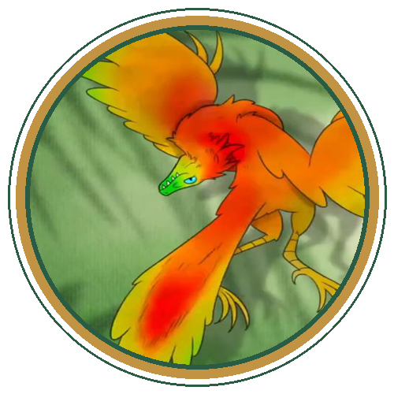

Learning Object Didattico per la Scuola Primaria (6–9 anni) & BES
Attestato di Giovane Paleontologo
Dai Fossili alle Piume · Dinosauri ed Evoluzione
Si certifica con entusiasmo che il giovane esploratore della scienza ha completato con successo tutte le videopillole animate, le flashcard concettuali e i quiz di verifica del Learning Object didattico:
Dai Fossili alle Piume: Come i Dinosauri sono arrivati fino a noi
Mesozoico & Fossili
Il Tempo Profondo: Conoscenza delle tre ere geologiche (Triassico, Giurassico, Cretacico) e di come le rocce abbiano custodito ossa, foglie e impronte.
Dinosauri Piumati
Il Calore Prima del Volo: Scoperta dei dinosauri a sangue caldo (Dromeosauri) e del ruolo originale delle piume come protezione termica.
Archaeopteryx & Uccelli
La Conquista del Cielo: Riconoscimento dell'Archaeopteryx e dei mutamenti ossei (sterno carenato, polsi, ossa cave) fino agli uccelli odierni.